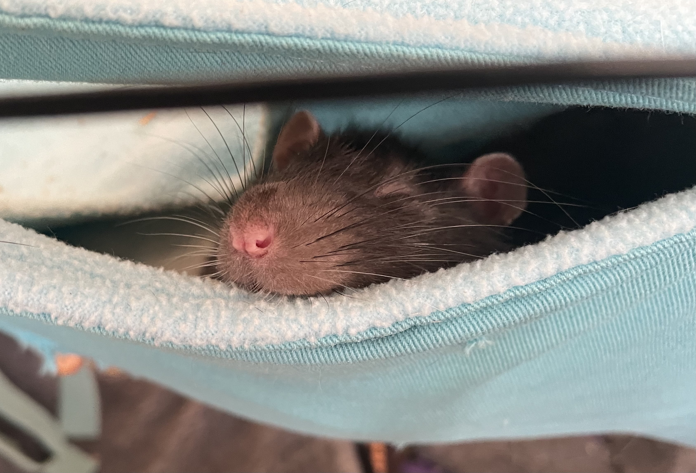

"You miss 100% of the shots you don't take"
- PERSONAL: From Huntersville, NC. Lived in SC for a few years, then moved back.
- PROFESSIONAL : N/A
- ACADEMIC: Graduated North Meck High School and took my first two semesters of college at Central Piedmont Community College, coming over to UNCC after those.
- PROGRAMMING/SOFTWARE: Java, currently learning C++ and Python.
- CLASSES:
- ITCS-3160 - Database Design and Implementation: Taking to know how to work with databases in a personal and professional environment!
- ITIS 3135 - Web App Design and Development: Taking because web app design is extremely valuable today, as websites are needed by most businesses.
- ITIS 3200 - Intro to Security & Privacy: Cybersecurity major! Class is invaluable to learning what I need to for the rest of my career.
- ITSC 3146 - Intro to Operating Systems and Networking: Like database design, this class is integral to understanding how to be a computing professional.
- GRADUATING: 2023
- STORY/ITEM: I have pet rats! Their names are Poopshoes, Azelf, and The Worm. The Worm is hairless.
- From NC